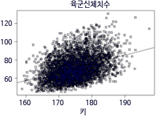

- ◈ 지금까지 학습한 내용을 적용해 봅시다.
-
아래의 그래프를 그리기 위한 함수입니다. 보기의 알맞은 함수를 빈칸에 드래그해 보세요.
입력 완료 버튼을 클릭하여 음성강의를 확인해 보세요.
- 
-
f =
1
(do$몸무게 ~ do$키)
abline( 2 )
3 (f)
-
보기
-
summary
lm
f
- 확인
- 해설보기
- 서지탱크는 적당한 체적의 공동부를 갖는 공기탱크를 말합니다. 크랭크 케이스에서 발생된 블로바이가스가 PCV밸브와 브리더호스를 통해 연소실로 들어가 재연소되며, 저속ㆍ저 부하일때는 미량의 가스가 PCV밸브로 들어가지만 고속ㆍ고 부하 시에는 다량의 가스가 PCV밸브 통해 각 실린더 연소실로 들어갑니다.
- 해설닫기
※ 학습을 완료한 후 다음페이지로 이동하세요.